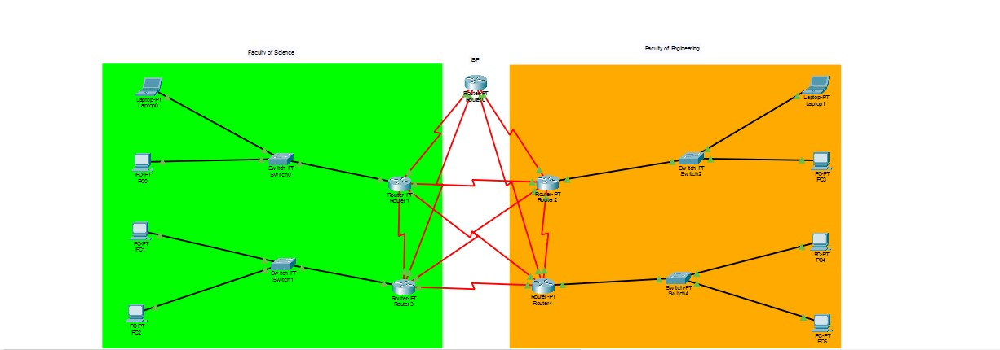

Welcome
Hi, I'm Nalubega Cynthia Liz. I'm a second year Information Technology student passionate about building things for the web and learning new technologies. I enjoy building practical projects.
Featured project

A bit about me
I enjoy networking while building practical IT projects. My goal is to gain hands-on experience and become a professional IT specialist who creates innovative solutions to practical IT problems.